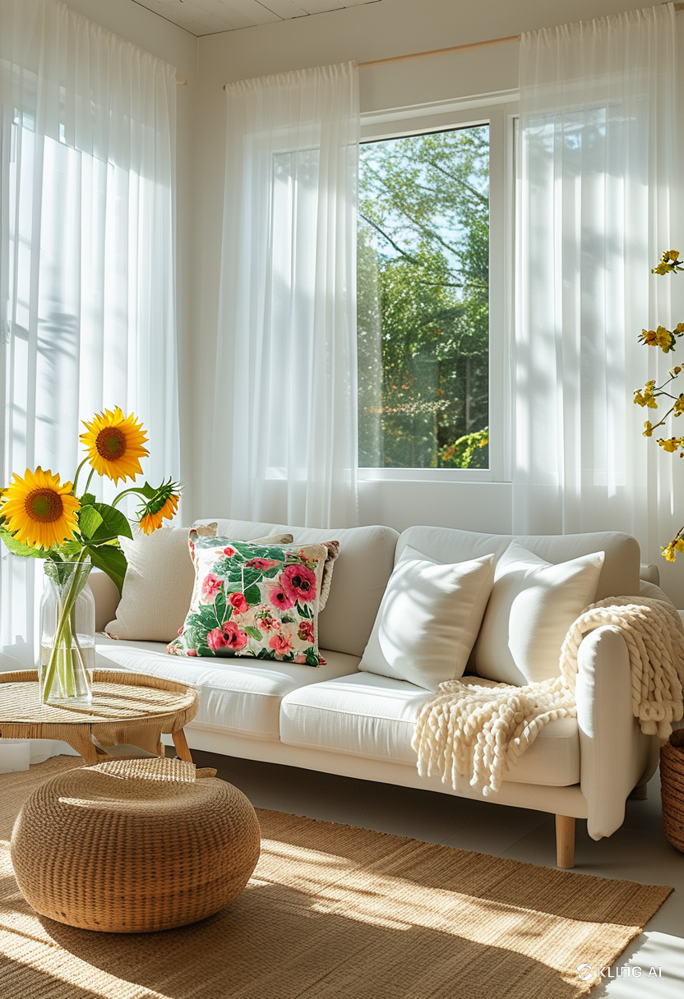
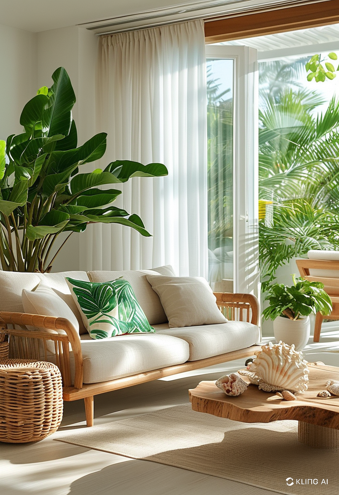
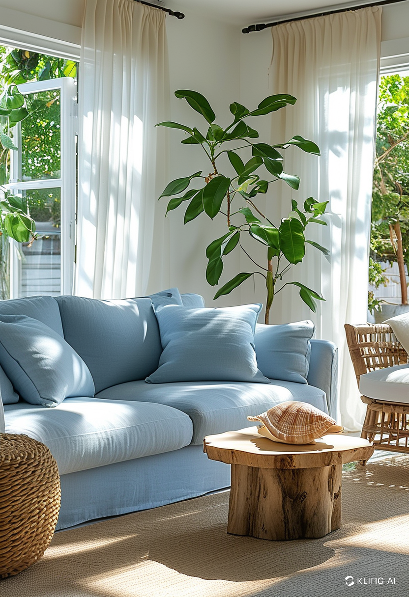
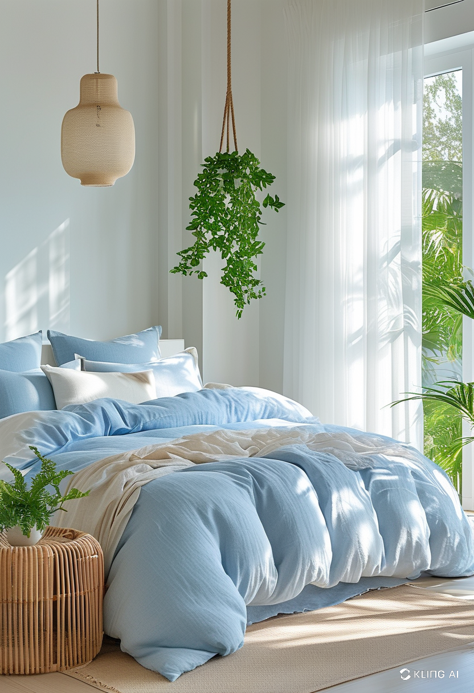
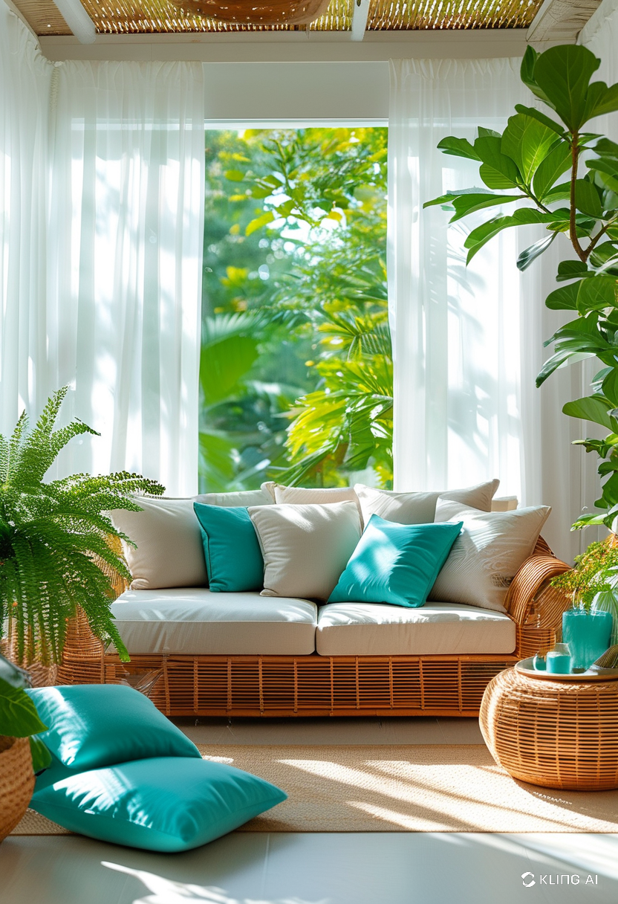
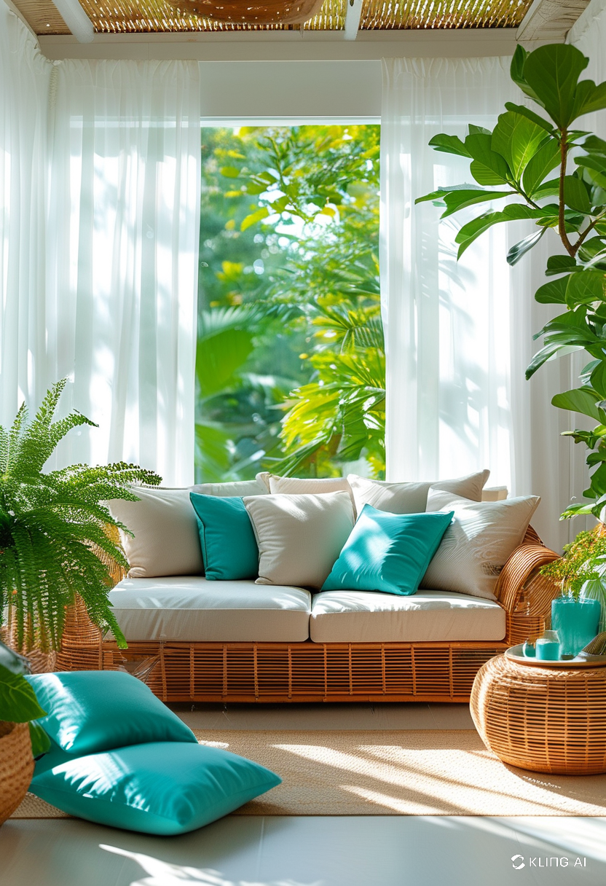

Summer Room Decor: Transform Your Space for the Season
When the sun is shining and the days are longer, refreshing your room with summer-inspired decor can create a bright and uplifting atmosphere. Whether you love coastal vibes, tropical accents, or minimalistic summer aesthetics, the right decor can completely change the ambiance of your space.
Embrace Light and Airy Colors
Summer decor thrives on light and refreshing hues. Soft pastels, crisp whites, and breezy blues evoke the feeling of open skies and warm beaches. Consider swapping out heavy curtains for sheer ones to allow more natural light into the room. Adding light-colored cushions, throws, and wall art can further enhance the summery ambiance.
Incorporate Natural Elements
Bringing nature indoors is a great way to celebrate the season. Woven rattan furniture, bamboo decor, and linen fabrics add a relaxed and organic feel to any space. Indoor plants, such as ferns, succulents, and palm trees, introduce greenery and improve air quality, making your room feel fresh and inviting.
Opt for Summer-Inspired Textiles
Lightweight and breathable fabrics are essential for a summer-ready space. Swap out thick blankets and rugs for cotton or linen alternatives. Bright floral patterns, tropical prints, and nautical stripes can instantly make a room feel more seasonal. Consider adding a lightweight, colorful throw on your bed or couch for an extra touch of summer charm.
Use Decorative Accents Wisely
Small decorative accents can make a big impact. Seashells, driftwood, and ceramic vases filled with fresh flowers create a charming summer aesthetic. Scented candles with fragrances like coconut, citrus, or ocean breeze can also add to the sensory experience of summer room decor.
Maximize Natural Light
Letting in as much natural light as possible is key to achieving a summer-inspired look. Position mirrors strategically to reflect sunlight and create the illusion of a brighter, larger space. Removing bulky furniture near windows and opting for light-reflecting decor can further enhance the airy feel of the room.
Conclusion
Refreshing your space with summer room decor can make your home feel more vibrant and inviting. By incorporating light colors, natural elements, and seasonal textiles, you can create a cheerful and relaxing environment perfect for the sunny months ahead. Simple changes can have a big impact, transforming your room into a summer haven with ease.
    
